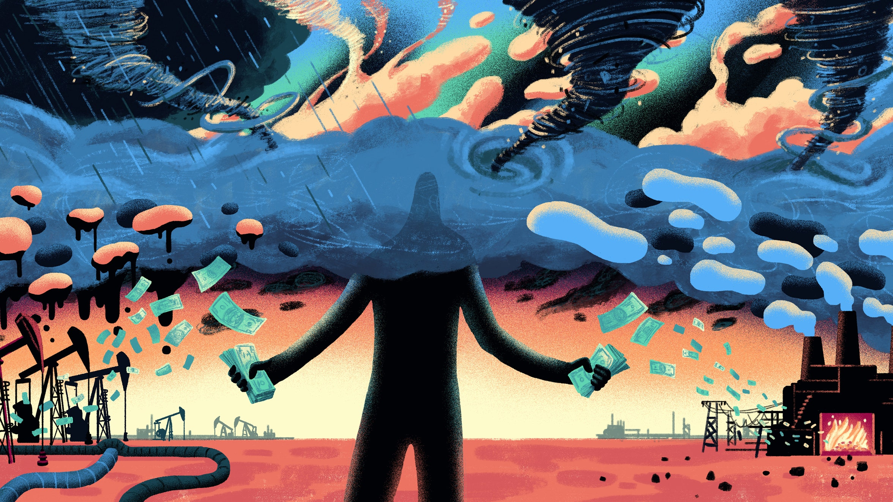
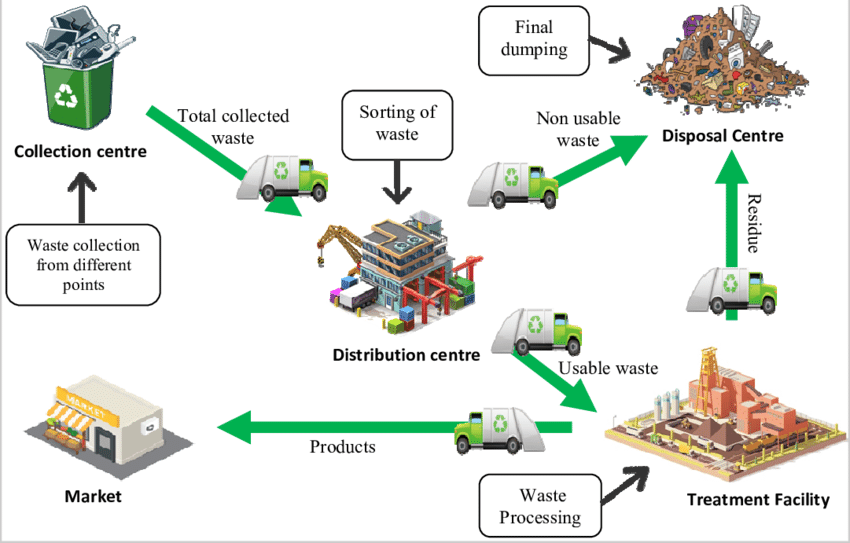

Iot has been harming the environment by making global warming worse and therefore accelerating climate change.
Iot on Climate Change
Medical advancements have made people live longer and healthier.

Medicine
Agricultural advancements have caused there to be more food and less hunger among poor people.

Agriculture
Factories have allowed there to be more job oppurtunities and therefore, decreased poverty. Although, the same factories are contributing to air, water and land pollution.

Factories
It also helps with waste management as it helps with sanitation and illegal dumping.
Waste Management